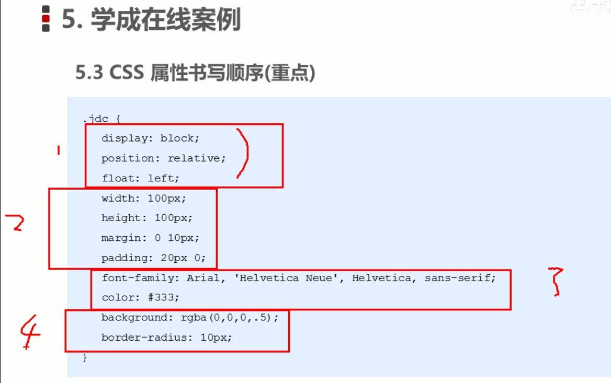
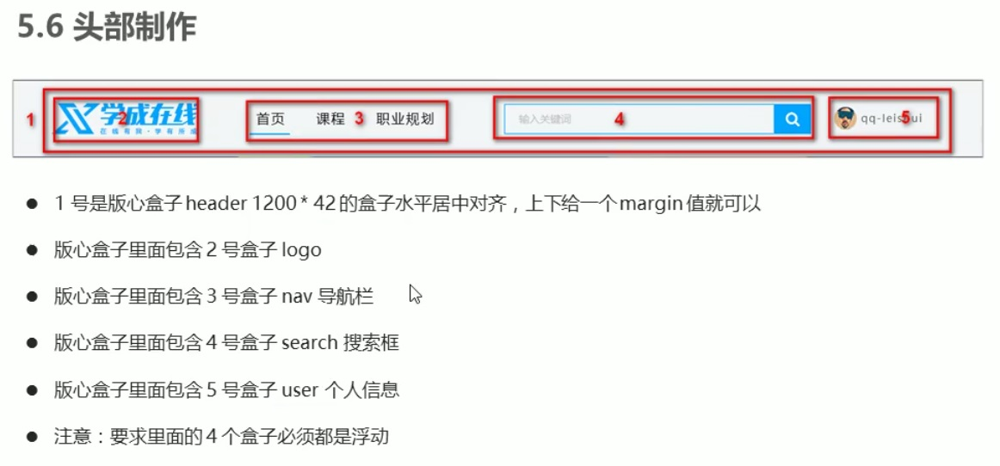
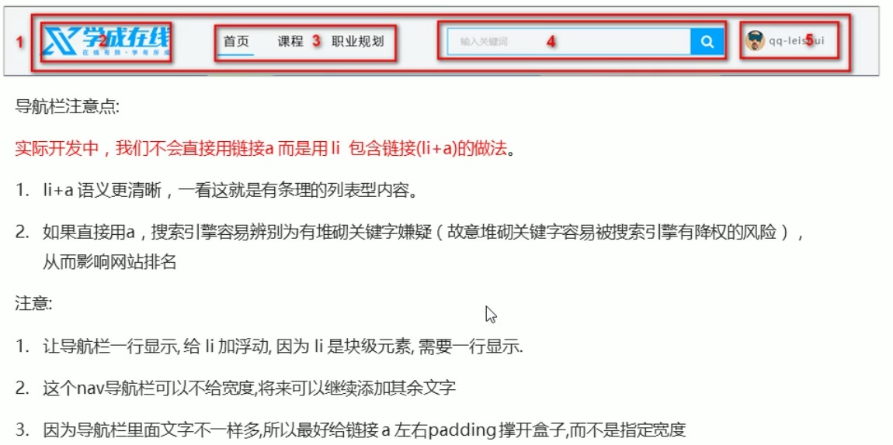
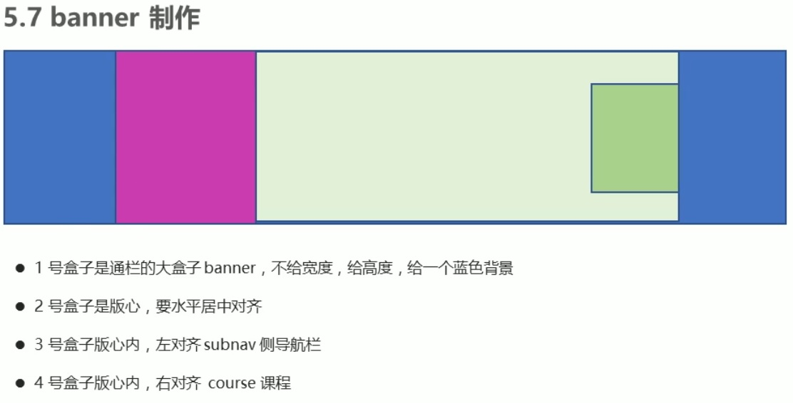
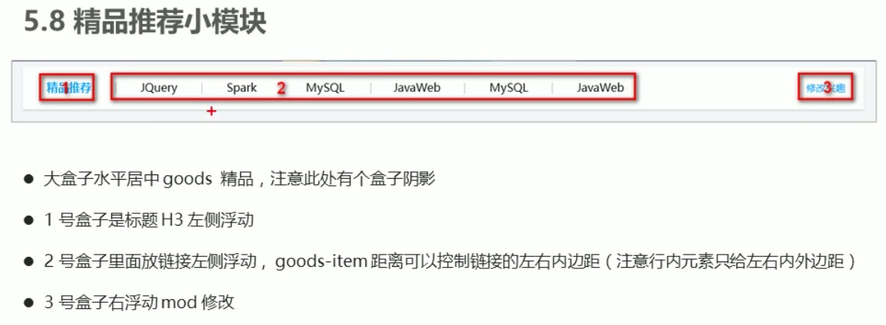
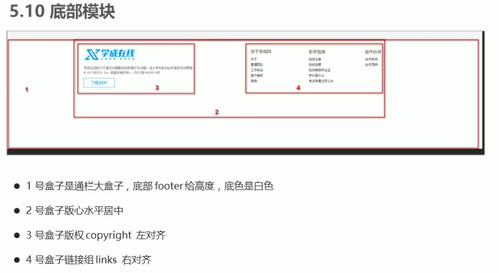
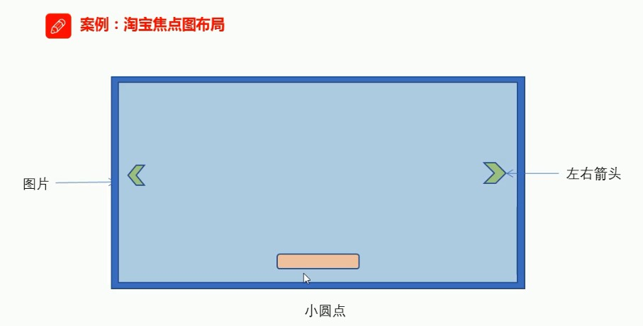
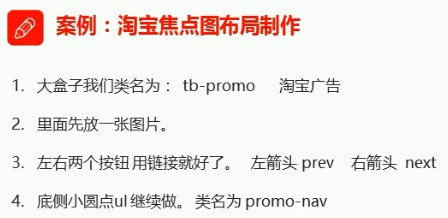
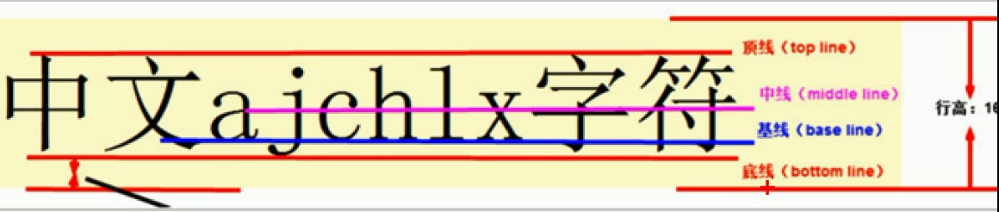
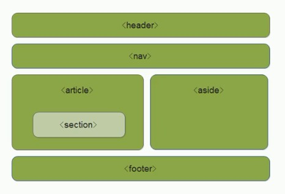

html 常用颜色 5分钟左右有使用方法 截图工具 http://w3school.com.cn https:developer.mozilla.org/zh-CN/ https://www.w3school.com.cn/cssref/css_selectors.asp https://blog.csdn.net/xiongdaandxiaomi/article/details/96115538
HTML 常用标签
这是黑马基础班课程，以后要找 就业班 课程
标题标签 <h1>-<h6>(重要)
标签
说明
标签语义: 特点:
<h1>我是一级标题</h1>
单词 head 的缩写，意为头部、标题
作为标题使用，并且依据重要性递减
1.加了标题的文字会变的加粗，字号也会依次变大。
<h1>标题一共六级选
<h2>文字加粗一行显
<h3>由大到小依次减
<h4>从重到轻随之变
<h5>语法规范书写后
<h6>具体效果刷新见
段落和换行标签(重要)
标签
说明
标签语义: 特点:
<p>我是一个段落标签</p>
单词 paragraph 的缩写，意为段落
可以把 HTML 文档分割分若干段落
1.文本在一个段落中会根据浏览器窗口的大小自动换行。
<br />
单词 break 的缩写，意为打断、换行。
强制换行
1.<br /> 是个单标签。
文本格式化标签
语义
标签
说明
加粗 <strong> </strong> 或者 <b> </b>
更推荐使用<strong>标签加粗 语义更强烈
倾斜 <em> </em> 或者 <i> </i>
更推荐使用<em>标签加粗 语义更强烈
删除线 <del> </del> 或者 <s> </s>
更推荐使用<del>标签加粗 语义更强烈
下划线 <ins> </ins> 或者 <u> </u>
更推荐使用<ins>标签加粗 语义更强烈
<div> 和 <span>标签
标签
说明
标签语义: 特点:
<div>这是头部</div>
div 是 division 的缩写，表示分割、分区。
没有语义
1.<div>标签用来布局 ，但是现在一行只能放一个<div>。大盒子布局 ，一行上可以多个<span>。小盒子
图像标签
标签
说明
标签语义: 特点:
<img src="图像URL" />
单词 image 的缩写，意为图像。
src 是<img>标签的必须属性 ，它用于指定图像文件的路径和文件名 。所谓属性：简单理解就是属 于这个图像标签的特性 。
图像标签的其他属性 ：width、heigth 一般只写其中一个，这样会自动按比例缩放，否则会变形。
属性
属性值
说明
src 图片路径
必须属性
alt
文本
替换文本。图像不能显示的文字
title
文本
提示文本。鼠标放到图像上，显示的文字
width
像素
设置图像的宽度
height
像素
设置图像的高度
border
像素
设置图像的边框粗细
超链接标签
标签
说明
属性
作用
<a href="跳转目标" target="目标窗口的弹出方式">文本或图像</a>
单词 anchor 的缩写，意为：锚
href
用于指定链接目标的 url 地址，(必要属性) 当为标签应用 href 属性时，它就具有了超链接的功能
锚点链接:点击链接，可以快速定位到页面中的某个位置。#名字 的形式，如 <a href="#two">第2集</a>通过 id (回到顶部)
特殊字符
主要是下面列表，其他字符查看：鱼c特殊字符列表
特殊字符
描述
字条的代码
空格符
<
小于号
<
>
大于号
>
&
和号
&
表格属性
表格标签这部分属性实际开发不常用，后面通过 CSS 来设置
属性名
属性值
描述
align
left、center、right
规定表格相对周围元素的对齐方式
border
1 或 ""
规定表格单元是否拥有边框，默认为 "" ，表示没有边框
cellpadding
像素值
规定单元格边沿与其内容之间 的空白，默认1像素。(即单元格内文字与边框之间的距离 )
cellspacing
像素值
规定单元格之间 的空白，默认2像素。(即 td 与 td 之间的距离 )
合并单元格
跨行合并:rowspan="合并单元格的个数"合并单元格三步曲：
1.先确定是跨行(上下格行合并:rowspan )还是跨列合并(左右格列合并:colspan )。列表标签
标签名
定义
说明
<ul></ul>
无序标签
里面只能包含li 没有顺序，使用较多。li里面可以包含任何标签
<ol></ol>
有序标签
里面只能包含li 有顺序，使用相对较少。li里面可以包含任何标签
<dl></dl>
自定义列表
里面只能包含 dt 和 dd 。dt 和 dd 里面可以放任何标签
无序列表 ul > li
无序列表 (li)
无序列表 (li)
无序列表 (li)
无序列表 (li)
无序列表 (li)
有序列表 ol > li
有序列表 (li)
有序列表 (li)
有序列表 (li)
有序列表 (li)
有序列表 (li)
自定义列表 dl > dt|dd
注意(dt )： 1.学会什么时候用无序列表，什么时候用自定义列表。 (dd)
2.无序列表和自定义列表代码怎么写？(dd)
3.列表布局在学习完 CSS 后再来完成。(dd)
表单域 是一个包含表单元素的区域。(<form>)常用属性
CSS
标签选择器、类选择器(长名字可用中划线-)、id选择器、通配符选择器
标签写法
说明
代码描述
width: 100px;
宽度: 100像素
height: 100px;
高度: 100像素
background-color: red;
背景色: 红
color: red;
颜色: 红
font:
font: font-style font-weight font-size /line-height font-family;
字体连写
字体连写(复合属性) (有顺序，不能更换顺序，要空格隔开 font-size(字号大小)
font-family(字体)
必须有，其他可省略): 样式(斜体) 粗细 字号大小 /行高 字体
body {font-size: 16px;}
字号大小
字体大小: 16像素(一般在body直接统一文字大小)
font-family: '宋体';
字体
字体: 宋体(一般在body直接统一字体)
p {font-style: normal;}
字体样式
文字样式: 默认值注意：平时我们很少给文字加斜体，反而要给斜体标签(em,i)改为不倾斜字体。
font-weight: bold;
字体粗细
设置文字粗细:粗体(开发中提倡用数字)
文本
color: red;
文本颜色
预定义的颜色值(测试demo常用) (开发常用，通过吸管工具得到)
text-align: left;(默认值)
对齐文本
文本水平对齐: 左对齐
text-decoration: none;(最常用)
装饰线
装饰线: 默认，没有装饰线(最常用)
p {text-indent: 20px;}
文本缩进
文本的第一行首行缩进 20px距离(可以是负数)
p {line-height: 26px;}(26px=5px+16px+5px)
行间距
上间距 5px
css 的三种样式表
1.行内样式表(行内式)标签内部写
<p style="color: red; font-size: 12px;">我是文本</p> style 是标签属性，在双引号中间写，写法要符合
css
规范
2.内部样式表(嵌入式)
<style>
3.外部样式表(链接式)
< rel="stylesheet" href="css文件路径">
css 选择器
id选择器(#id)注意：不能有同 id ，如果有同 id ，css 只会对第 1个 id 作修改。(相当于 id选择器只能用一次)唯一元素，主要与 JavaScript 搭配使用。
主要与 CSS 搭配使用。 Emmet语法
HTML标签
父子关系 >
说明
写法
结果
不写标签时默认使用 div 标签
#id$*3{我是div内容$}
我是div内容1
我是div内容2
我是div内容3
父子关系>
ul.ulClass>li#liId$.liClass{li内容$}*4
兄弟关系+
div{我是div$}*2+p{我是p$}*2
我是div1
我是div2
我是p1
我是p2
css语法:在 style 中：
只需写属性单词首字母及属性值
缩写
对应功能
w200
width:200
tdn
text-decoration: none;
快速格式化代码
vscode 快速格式化代码：shift+alt+f (即鼠标右键快速格式化代码功能)
也可以设置当我们保存页面的时候自动格式化代码：
文件-->首选项-->设置(即左下方的"齿轮")
"editor.formatOnType": true,
只需要设置一次即可，以后都可以自动保存格式化代码
CSS 的复合选择器
后代选择器
后代选择器 又称为包含选择器 ，可以选择父元素里面子元素，其写法就是把外层标签写在前面，面层标签写在后面，中间用空格分隔。元素2
写法(所有后代):
元素1 元素2 {样式声明}
ul li {样式声明}
写法(所有后代):
元素1(类) 元素2 元素3{样式声明}
.nav li a{}
直接将本表的后代 td 选出来作修改
.tableSelector td{color:blue}
子选择器
子元素选择器(子选择器) 只能选择子元素元素2 子元素 ，其孙子、重孙子之类都不归他管。
语法：
元素1>元素2{样式声明}
div>p{样式声明}
并集选择器
并集选择器可以选择多组标签，同时为他们定义相同的样式 。通常用于集体声明。并集选择器 是各选择器通过英文逗号(,)连接而成 ，任何形式的选择器都可以作为并集选择器的一部分。逗号隔开 和 的意思
语法
元素1,元素2 {}
ul,div {} /*选择 ul 和 div 标签元素*/
自动格式会将并集变竖
div,
链接伪类选择器--所有标签都可以做，不止<a>
a:link
/* 选择所有未被访问的链接 */
a:visited
/* 选择所有已被访问的链接 */
a:hover
/* 选择鼠标指针位于其上的链接 */
a:active
/* 选择活动链接(鼠标按下未弹起的链接) */
链接伪类选择器注意事项 LVHA 的顺序声明:link :visited : hover :active。链接伪类选择器实际工作开发中的写法： :focus 伪类选择器
:focus 伪类选择器 是用于选取获得焦点的表单元素。复合选择器总结
选择器
作用
特征
使用情况
隔开符号及用法
后代选择器 用来选择后代元素
可以是子孙后代
较多
符号是 空格: .nav a
子代选择器
选择最近一级元素
只选亲儿子
较少
符号是 大于: .nav>a
并集选择器 选择某些相同样式的元素
可以用于集体声明
较多
符号是 逗号: .nav a
链接伪类选择器 选择不同状态的链接
跟链接相关
较多
重点记住 a{} 和 a:hover a{}> 实际开发的写法
:focus选择器
选择获得光标的表单
跟表单相关
较少
input:focus 记住这个写法
什么是元素显示模式
元素显示模式就是元素(标签)以什么方式进行显示 ,比如<div>自己占一行，比如一行可以放多个<span>。块元素 和行内元素 两种元素。
块元素
常见的块元素有<h1>~<h6>、<p>、<div>、<ul>、<ol>、<li>等，其中<div> 标签是最典型的块元素 。
注意： 文字类的元素内不能使用块级元素
<p>标签主要用于存放文字，因此<p>里面不能放块级元素，特别是不能放<div>
同理，<h1>~<h6>等都是文字类块级标签，里面也不能放其他块级元素
行内元素
常见的块元素有<a>、<strong>、<b>、<em>、<i>、<del>、<s><ins>、<u>、<span>等，其中<span> 标签是最典型的行内元素 。有的地方也将行内元素称为内联元素 。
注意： 链接里面不能再放链接
特殊情况链接<a>里面可以放块级元素，但是给<a>转换一下块级模式最安全
行内块元素
在行内元素中有几个特殊的标签----<ing />、<input
/>、<td>，它们同时具有块元素和行内元素的特点 。有些资料称它们为行内块元素 。
注意： 链接里面不能再放链接
特殊情况链接<a>里面可以放块级元素，但是给<a>转换一下块级模式最安全
元素显示模式总结
元素模式
元素排列
设置样式
默认宽度
包含
块级元素
一行只能放一个块级元素
可以设置宽度高度
容器的100%
容器级可以包含任何标签
行内元素
一行可以放多个行内元素
不可以直接设置宽度高度
它本身内容的宽度
容纳文本或其他行内元素
行内块元素
一行可以放多个行内块元素
可以设置宽度高度
它本身内容的宽度
元素显示模式转换
一个模式的的元素需要另外一种模式的特性：
转换为块级元素：display:block; 转换为行内元素：display:inline;
转换为行内块：display:inline-block;
单选文字垂直居中
块{line-height:40px}
(5px)上空隙
背景总结(可以简写，下表是约定顺序，但无必然的规定，即可以写 d 唔写 d ，写法顺序也可以打乱)
属性
作用
值
background-color
1.背景颜色
预定义的颜色值/十六进制/RGB代码
background-image
2.背景图片
url(图片路径)
background-repeat
3.是否平铺
repeate/no-repeat/repeat-x/repeat-y
background-attachment
4.背景附着
scroll(背景滚动) / fixed(背景固定)
background-position
5.背景位置
background-position : length || length
背景简写
书写更简单
1.背景颜色 2.背景图片地址 3.背景平铺 4.背景滚动 5.背景位置;
背景色半透明
背景颜色半透明
background: rgba(0,0,0,0.3); 后面必须是 4个值
CSS 的三大特性:层叠性、继承性、优先级
层叠性
层叠性原则：
样式冲突，遵循的原则就是就近原则 ，哪个样式离结构近，就执行哪个样式
样式不冲突，不会层叠
继承性
CSS 中的继承：子标签会继承父标签的某些样式，如文本颜色和字号。
恰当地使用继承可以简化代码，降低CSS样式的复杂性
子元素可以继承父元素的样式(text-,font-,line- 这些元素开头的可以继承，以及 color 属性)
行高的继承性
body{
行高可以跟单位也可以不跟单位
如果子元素没有设置行高，则会继承父元素的行高为 1.5 倍
此时子元素的行高是：当前子元素的文字大小 * 1.5 倍
body 行高 1.5 这样的写法最大的优势就是里面子元素可以根据自己文字大小自动调整行高
优先级
选择器权重如下表所示：
选择器
选择器权重
继承 或者 *
0,0,0,0
元素选择器
0,0,0,1
类选择器，伪类选择器
0,0,1,0
ID选择器
0,1,0,0
行内样式 style=""
1,0,0,0
!important
∞无穷大∞
权重叠加: 如果是复合选择器，则会有权重叠加，需要计算权重。div ul li ------> 0,0,0,3
.nav ul li ------> 0,0,1,2
a:hover ------> 0,0,1,1(a[0,0,0,1] + :hover[0,0,1,0])
.nav a ------> 0,0,1,1
盒子模型
看透网页布局的本质
网页布局过程：
1.先准备好相关的网页元素，网页元素基本都是盒子 Box。盒子模型
盒子模型(Box Model)组成 盒子模型 ：就是把 HTML 页面中的布局元素入会费作是一个矩形的盒子，也就是一个盛装内容的容器。border )、外边距(margin )、内边距(padding )、和实际内容(content )边框(border)
特别：可以给 <hX> 设置边框 border : border-width || border-style || border-color(具体值参考 help)
属性
作用
border-width
定义边框粗细，单位是 px
border-style
边框的样式，主要常用3个：
border-color
边框颜色
边框简写(复合写法)
border: 1px solid red; 没有顺序，但一般是这个顺序
边框分开写法(三角形写法: #border4-3-1)
border-top: 1px solid red; /* 只设定上边框，其余同理 */
border-collapse:collapse;
相邻边框合并在一起
边框会影响盒子实际大小 内边距(padding)
即边框与内容之间的距离
属性
作用
padding-left
左内边距
padding-right
右内边距
padding-top
上内边距
padding-bottom
下内边距
padding 属性(简写属性)可以有一到四个值
值的个数
表达意思
padding: 5px;
1个值，代表上下左右都有5像素内边距;
padding: 5px 10px;
2个值，代表上下内边距是5像素 左右内边距是10像素;
padding: 5px 10px 20px;
3个值，代表上内边距是5像素 左右内边距是10像素 下内边距是20像素;
padding: 5px 10px 20px 30px;
4个值，上是5像素 右10像素 下20像素 左是30像素;(顺时针)
内边距会影响盒子实际大小 解决方案： width/height 减去多出来的内边距大小 即可外边距(margin)
即控制盒子和盒子之间的距离
属性
作用
margin-left
左外边距
margin-right
右外边距
margin-top
上外边距
margin-bottom
下外边距
margin 简写方式代表的意义跟 padding 完全一致
外边距典型应用
外边距可以让块级盒子 水平居中 ，但是必须满足两个条件：左右的外边距 都设置为 auto。
.header{
常见的写法，以下三种都可以：
margin-left: auto; margin-right: auto;
margin: auto;
margin: 0 auto;
注意： 以上方法是让块级元素水平居中，行内元素或者行内块元素水平居中给其父元素添加 text-align:center 即可
嵌套块元素垂直外边距的塌陷(浮动盒子不会有外边距合并的问题)
只要父盒子包含子盒子，子盒子使用 margin，必定会发生"外边距塌陷"！ 即是：子div margin(外边距)代替了父 div
margin(外边距)谁大就谁发生了作用：
解决方法 ：..........................我自己想的办法是不对子元素定义外边框(不要margin)，在父元素定义内边框(padding)
1.可以为父元素定义上边框(border-top: 1px solid transparent;)
2.可以为父元素定义上内边距(padding-top: 1px ;)
3.可以为父元素添加 overflow:hidden
清除内外边距
网页元素很多都带有默认的内外边距，而且不同浏览器默认的也不一致。因此我们在布局前，首先清除下网页元素的内外边距。
* {
注意:行内元素为了照顾兼容性，尽量只设置左右内外边距，不要设置上下内外边距。但是转换为块级和行内元素就可以了
因为网页美工大部分效果图都是利用 PS (PhotoShop) 来做的，所以以后我们大部分切图工作都是在 PS 里面完成。
文件--> ：可以打开我们要测量的图片Ctrl+R ：可以打开标尺，或者视图-->标尺 右击标尺，把里面的单位改为像素
Ctrl+加号(+) 可以放大视图，Ctrl+减号(-) 可以缩小视图按住空格键 ��鼠标可以变成小手，拖动 PS 视图用选区 拖动 可以测量大小
Ctrl+D 可以取消选区，或者在旁边空白处点击一下 也可以取消选区
1.jpg图像格式:JPEG(JPG)对色彩的信息保留较好,高清,颜色较多,我们产品类的图片经常用jpg格式的 实际经常用于一些图片小动画效果 如果想要切成背景透明的图片请选择png格式 .对我们前端人员来说最大的优点:我们可以直接从上面复制文字,获得图片,还可以测量大小和距离
新知识点：去掉 li 前面的项目符号(小圆点)
语法：
li {list-style: none;}
圆角边框-常用
在 CSS3 中，新增了圆角边框 样式，这样我们的盒子就可以变圆角了。
border-radius 属性用于设置元素的外框圆角。
语法：
border-radius:length;(数值px 或 百分比)
如果是正方形 ，想要设置为一个圆，把数值修改为高度或者宽度的一半 即可，或者直接写50%
如果是矩形，设置为高度的一半就可以做 我是圆角边框 该属性是一个简写属性 ，可以跟四个值，分别代表左上角、右上角、右下角、左下角
分开写：
border-top-left-radius、
盒子阴影-常用
语法：做了:hover，鼠标经过阴影消失
box-shadow: h-shadow v-shadow blur spread color inset;
值
描述
测试后的说明
h-shadow
必需。水平阴影的位置。允许负值。
(+数)阴影横向右移动，(-数)阴影横向左移动
v-shadow
必需。垂直阴影的位置。允许负值。
(+数)阴影竖向下移动，(-数)阴影竖向上移动
blur
可选。模糊距离
阴影的虚实，0至正数，数值越小越实，越大越模糊(负数没阴影)
spread
可选。阴影的尺寸
影子的大小
color
可选。阴影颜色。请参阅 CSS 颜色值
inset
可选。将外部阴影(outset)改为内部阴影
默认outset，但不能写outset，内阴影效果：
注意:
1.默认是外阴影(outset)，但是不可以写这个单词，否则导致阴影无效
2.盒子阴影不占用空间，不会影响其他盒子排列
文字阴影-少用
语法：
text-shadow: h-hadow v-shadow blur color;
值
描述
h-shadow
必需。水平阴影的位置。允许负值。
v-shadow
必需。垂直阴影的位置。允许负值。
blur
可选。模糊距离
color
可选。阴影颜色。请参阅 CSS 颜色值
传统网页布局的三种方式
网页布局的本质----用 CSS 来摆放盒子。把盒子摆放到相应位置
CSS 提供了三种传统布局方式(简单来说，就是盒子如何进行排列顺序)
普通流(标准流)
浮动
定位
标准流(普通流/文档流)----我认为浮动、定位外的就是标准流
这三种布局方式都是用来摆放盒子的，盒子摆放到合适位置，布局自然就完成了。
注意：实际开发中，一个页面基本都包含了这三种布局方式(后面移动端学习新的布局方式)
浮动(float)
总结：有很多的布局效果，标准流没有办法完成，此时可以利用浮动完成布局。因为浮动可以改变元素标签默认的排列方式网页布局第一准则：多个块级元素纵向排列找标准流，多个块级元素横向排列找浮动
float 属性用于创建浮动框，将其移动到一边，直到左边缘或右边缘触及包含块或另一个浮动框的边缘。
语法：
选择器 { float: 属性值;}
属性值
描述
none
元素不浮动(默认值 )
left
元素向左 浮动
right
元素向右 浮动
float:left
float:right
浮动特性(重难点)
1.浮动元素会脱离标准流(脱标) 1.脱离标准普通流的控制(浮)移动到指定位置(动)，(俗称脱标 )
2.浮动的盒子不再保留原先的位置--(浮动元素会压住不浮动的元素)
2.浮动的元素会一行内显示并且元素顶部对齐 注意：浮动的元素是互相贴靠在一起的(不会有缝隙)，如果父级宽度装不下这些浮动的盒子，多出的盒子会另起一行对齐
任何元素都可以浮动。不管原先是什么模式的元素，添加浮动之后具有行内块元素 相似的特性
如果块级盒子没有设置宽度，默认宽度和父级一样宽，但是添加浮动后，它的大小根据内容来决定
浮动的盒子中间是没有缝隙的，是紧挨着一起的
行内元素同理
浮动元素经常和标准流父级搭配使用
先用标准流的父元素排列上下位置，之后内部子元素采取浮动排列左右位置，符合网页布局第一准则
浮动布局注意点
1.浮动和标准流的父盒子搭配
先用标准流的父元素排列上下位置，之后内部子元素采取浮动排列左右位置
2.一个元素浮动了，理论上其余的兄弟元素也要浮动
一个盒子里面有多个子盒子，如果其中一个盒子浮动了，那么其他兄弟也应该浮动，以防止引起问题浮动的盒子只会影响浮动盒子后面的标准流，不会影响前面的标准流
清除浮动
语法：
选择器{clear:属性值;}
属性值
描述
left
不允许左侧有浮动元素(消除左侧的影响)
right
不允许右侧有浮动元素(消除右侧的影响)
both
同时消除左右两侧的影响
我们实际工作中，几乎只用 clear:both ;消除浮动的策略是：闭合浮动
消除浮动方法
1.额外标签法 也称为隔墙法，是 W3C 推荐的做法。
额外标签法 会在浮动元素末尾添加一个空的标签 。例如<div
style="clear:both"
></div> ，或者其他标签(如<br>等)优点：通俗易懂，书写方便
缺点：添加许多无意义的标签，结构化较差
注意：要求这个新的空标签必须是块级元素
总结：清除浮动的本质是清除浮动元素脱离标准流造成的影响 闭合浮动。只让浮动在父盒子内部影响，不影响父盒子外面的其他盒子
隔墙法，就是在最后一个浮动的子元素后面添加一个额外标签，添加清除浮动样式
2.父级添加 overflow 属性 3.父级添加 :after 伪元素 (原理是-额外标签法，增加 after)
建立 .clearfix:after 和 .clearfix ，详见 <style> 代码
优点：没有增加标签，结构更简单
缺点：照顾低版本浏览器
代表网站：百度、淘宝网、网易等
4.父级添加双伪元素 (原理是-额外标签法，增加 after 和 before)
建立 [.clearfix4:before,.clearfix4:after] [.clearfix4:after] 和 [.clearfix4] ，详见 <style> 代码
优点：代码更简洁
缺点：照顾低版本浏览器
代表网站：小米、腾讯等
清除浮动总结
为什么需要清除浮动？
1.父级没高度
2.子盒子浮动了
影响下面布局了，我们就应该清除浮动了
清除浮动的方式
优点
缺点
额外标签法(隔墙法)
通俗易懂，书写方便
添加许多无意义的标签，结构化较差
父级 overflow:hidden;
书写简单
溢出隐藏
父级after伪元素
结构语义化正确
由于IE6-7不支持:after，兼容性问题
父级双伪元素
结构语义化正确
由于IE6-7不支持:after，兼容性问题
CSS 属性书写顺序(重点)
建议遵循以下顺序:
1.布局定位属性: display/ position/ float/ visibility/ overflow(建议 display第一个写,毕竟关系到模式)
2.自身属性: width/ height/ margin/ padding/border/background
3.文本属性: color/font/text-decoration/text-align-/vertical-align-/whit-space/break--word
4.其他属性(css3): content/ cursor/-/box-shadow-/text -shadow-/background: linear-gradient-

页面布局整体思路
为了提高网页制作的效率,布局时通常有以下的整体思路:
1.必须确定页面的版心(可视区),我们测量可得知。
2.分析页面中的行模块,以及每个行模块中的列模块。其实页面布局第一准则
3.一行中的列模块经常浮动布局先确定每个列的大小,之后确定列的位置.页面布局第二准则
4.制作HTML结构。我们还是遵循,先有结构,后有样式的原则。结构永远最重要
5.所以,先理清楚布局结构再写代码尤为重要这需要我们多写多积累
1.头部制作 .header


2.广告制作 .banner

3.精品推荐 .goods

4.box 核心内容 .box
由于盒子右边距有边，所以外盒装不下第5个5.footer 模块

CSS 定位
定位的组成
定位 :将盒子定 在某一个位置,所以定位也是在摆放盒子,按照定位的方式移动盒子。 定位模式 用于指定—个元素在文档中的定位方式。边偏移 则决定了该元素的最终位置。定位模式 position 属性来设置,其值可以分为四个:
值
语义
static
静态 定位
relative
相对 定位
absolute
绝对 定位
fixed
固定 定位
边偏移
边偏移就是定位的盒子移动到最终位置。有top、 bottom、left和 right 4个属性
边偏移属性
示例
描述
top
top: 80px
顶端 偏移量，定义元素相对于其父元素上边线的距离 。
bottom
bottom: 80px
底部 偏移量，定义元素相对于其父元素下边线的距离 。
left
left: 80px
左侧 偏移量，定义元素相对于其父元素左边线的距离 。
top
top: 80px
右侧 偏移量，定义元素相对于其父元素右边线的距离 。
静态定位 static (了解)
选择器{position:static;}
静态定位按照标准流特性摆放位置，它没有边偏移 相对定位 relative (重要)
相对定位 是元素在移动位置的时候，是相对它原来的位置 来说的(自恋型)。
选择器{position:relative}
相对定位的特点：(务必记住)移动位置的时候参照点是自己原来的位置 )。原来 在标准流的位置 继续占有，后面的盒子仍然以标准流的方式对待它(不脱标，继续保留原来位置 )。绝对定位 absolute (重要)
绝对定位 是元素在移动位置的时候，是相对于它祖先元素 来说的(拼爹型)。
选择器{position:absolute;}
绝对定位的特点：(务必记住)没有祖先元素 或者祖先元素没有定位 ，则以浏览器为准定位(Document文档)。不再占有原先的位置 。(脱标)
子绝父相的由来
弄清楚这个口诀，就明白了绝对定位和相对定位的使用场景。子级是绝对定位的话，父级要用相对定位 。
1.子级绝对定位，不会占有位置，可以放到父盒子里面的任何一个地方，不会影响其他兄弟盒子。相对定位经常用来作为绝对定位的父级 。因为父级需要占有位置，因此是相对定位，子盒子不需要占有位置，则是绝对定位 子绝父绝 也会遇到。
固定定位 fixed (重要)
固定定位 是元素固定于浏览器可视欧的位置 。主要使用场景：可以在浏览器页面滚动时元素的位置不会改变。选择器{position:fixed;}
固定定位的特点：(务必记住)
1.以浏览器的可视窗口为参照点移动元素。
跟父元素没有任何关系
不随滚动条滚动
2.固定定位不在占有原先的位置 。
固定定位也是脱标的，其实固定定位也可以看做是一种特殊的绝对定位。
固定定位小技巧：固定在版心右侧位置。
.fixed{
粘性定位 sticky(了解) --由于浏览器支持差，所以此效果一般是用 JavaScript 实现
选择器{position:sticky;top:10px;}
粘性定位的特点：
1.以浏览器的可视窗口为参照点移动元素(固定定位特点)占有原先的位置 (相对定位特点)定位总结
定位模式
是否脱标
移动位置
是否常用
static 静态定位
否
不能使用边偏移
很少
relative 相对定位 否(占有位置) 相对于自身位置移动 常用
absolute 绝对定位 是(不占有位置) 带有定位的父级 常用
fix 固定定位 是(不占有位置) 浏览器可视区 常用
sticky 粘性定位
否(占有位置)
浏览器可视区
当前阶段少
1.一定要记住 相对定位、固定定位、绝对定位 两个大的特点：
1.是否占有位置(脱标否)
2.以谁为基准点移动位置
2.学习定位重点学会子绝父相。
定位叠放次序 z-index
在使用定位布局时，可能会出现盒子重叠的情况。此时，可以使用 z-index 来控制盒子的前后次序(z轴)
选择器{ z-index: 1;}
数值可以是正整数、负整数或0默认是auto,数值越大,盒子越靠上定位的拓展
1.绝对定位的盒子居中 margin:0 Auto 水平居中,但是可以通过以下计算方法实现水平和垂直居中2.定位特殊特性 3.脱标的盒子不会触发外边距塌陷 4.绝对定位(固定定位)会完全压住盒子 淘宝焦点图布局
  网页布局总结
通过盒子模型,清楚知道大部分 htm 标签是一个盒子。垂直的块级盒子显示就用标准流布局 多个块级盒子水平显示就用浮动布局 。如果元素自由在某个盒子内移动就用定位布局 。元素的显示与隐藏
类似网站广告,当我们点击关闭就不见了,但是我们重新刷新页面,会重新出现!让一个元素在页面中隐藏或者显示出来 1. display 显示隐藏
display属性用于设置一个元素应如何显示。
display:none;隐藏对象
display: block;除了转换为块级元素之外,同时还有显示元素的意思
display隐藏元素后,不再占有原来的位置 2. visibility 显示隐藏
visibility属性用于指定一个元素应可见还是隐藏
visibility: visible;元素可视
visibility: hidden;元素隐藏
visibility隐藏元素后,继续占有原来的位置 3. overflow 溢出显示隐藏 overflow 属性指定了如果内容溢出一个元素的框(超过其指定高度及宽度)时，会发生什么。
属性值
描述
visible
不剪切内容也不添加滚动条
hidden
不显示超过对象尺寸的内容,超出的部分隐藏掉
scroll
不管超出内容否,总是显示滚动条
auto
超出自动显示滚动条,不超出不显示滚动条
一般情况下,我们都不想让溢出的内容显示出来,因为溢出的部分会影晌布局
/* 鼠标经过 .tudou， 里面的 .mask 显示出来 */
精灵图
精灵技术目的： 使用精灵图核心： background-position 。x 和 y 坐标。注意网页中的坐标有所不同使用精灵图核心总结 background-position 。字体图标的产生
字体图标使用场景:主要用于显示网页中通用、常用的一些小图标。字体图标 iconfont 。字体图标 可以为前端工程师提供一种方便高效的图标使用方式,展示的是图标,本质属于字体
字体图标的优点
轻量级:一个图标字体要比一系列的图像要小。一旦字体加载了,图标就会马上渲染出来,减少了服务器请求
灵活性:本质其实是文字,可以很随意的改变颜色、产生阴影、透明效果、旋转等
兼容性:几乎支持所有的浏览器,请放心使用
注意:字体图标不能替代精灵技术,只是对工作中图标部分技术的提升和优化
总结： 1.字体图标的下载 推荐下载网站：(免费) icomoon 字库 ：国外服务器，打开网速较慢。阿里妈妈 字库 ：包含了淘宝图标库和阿里妈妈图标库，可以使用 AI 制作图标上传生成。2.字体图标的引入(引入到我们 html 页面中) 3.字体图标的追加(以后添加新的小图标) css 用户样式
鼠标样式
设置或检索在对象上移动的鼠标指针采用何种系统预定义的光标形状。
属性值
描述
default
小白 默认箭头
pointer
小手
move
移动
text
文本
not-allowed
禁止
轮廓线 outline
给表单添加 outline:0; 或者 outline:none; 样式之后，就可以去掉默认的蓝色边框。
input{outline:none;}
textarea{resize:none;}
vertical-align 属性应用
CSS 的 vertical-align 属性使用场景：经常用于设置图片或者表单(行内块元素)和文字垂直对齐。垂直对齐方式 ，但是它只针对行内元素或者行内块元素有效。
vertical-align: baseline | top | middle | bottom
值
描述
baseline
默认。元素放置在父元素的基线 上。
top
把元素的顶端与行中最高元素的顶端对齐
middle
把此元素旋转在父元素的中部
bottom
把元素的顶端与行中最低的元素的顶端对齐 。

解决图片底部默认空白缝隙问题
bug:图片底侧会有一个空白缝隙,原因是行内块元素会和文字的基线对齐。vertical-align:middle | top | bottom 等。(提倡使用的)display: block; 单选文本溢出显示省略号--必须满足三个条件
width: 80px;
中华人民共和国中华人民共和国中华人民共和国中华人民共和国
多行文本溢出显示省略号
多行文本溢出显示省略号，有较大兼容性问题，适合于 webKit 浏览器或移动端(移动端大部分是 webkit 内核)须将 height 设置成合适的高度
overflow: hidden;
中华人民共和国中华人民共和国中华人民共和国中华人民共和国中华人民共和国中华人民共和国中华人民共和国
更推荐让后台人员来做这个效果，因为后台人员可以设置显示多少个字，操作更简单。
margin 负值运用
1.让每个盒子 margin往左侧移动 -1px 正好压住相邻盒子边框
原样：
margin -1px 令边框线无左右各加 1px：
文字围绕浮动元素
行内块巧妙运用(页码)
三角形巧妙运用
我的普通代码
简写代码
我原来用 div 写的应用开发
$1000.00
$5000.00
老师例子的应用开发
￥1650
￥5650
应该用我自己的方法再做一次，应该用字符标签
未做
不同浏览器对有些标签的默认值是不同的,为了消除不同浏览器对HML文本呈现的差异,照顾浏览器的兼容,我们需要对CSS初始化简单理解 :CSS初始化是指重设浏览器的样式。(也称为 CSS reset)Unicode编码字体 HTML5 的新特性
HTML5 的新增特性主要是针对于以前的不足,增加了一些新的标签、新的表单和新的表单属性等 HTML5 新增的语义化标签
<header>
头部标签

<nav>
导航标签
<article>
内容标签
<section>
定义文档某个区域
<aside>
侧边栏标签
<footer>
尾部标签
注意 :搜索引孳 的多次 块级元素